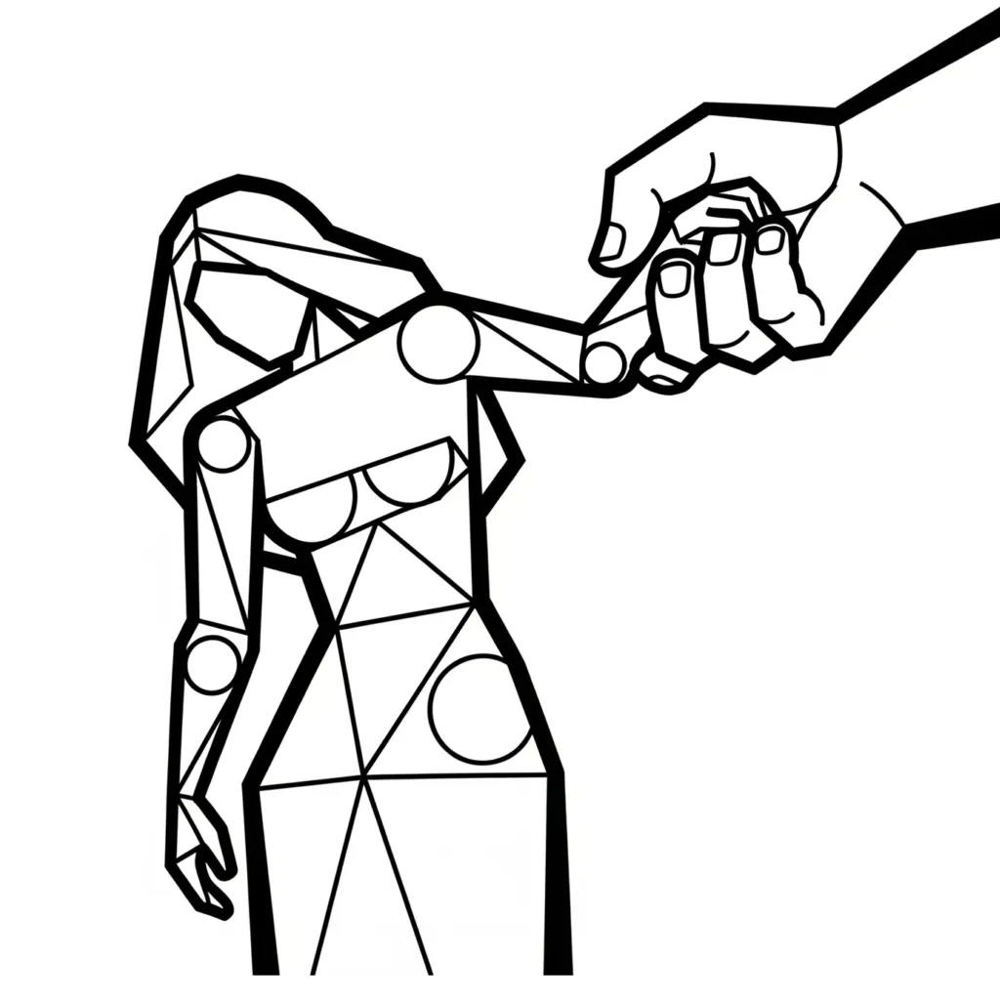

Then Amnon said to the king, Let Tamar, my sister, come and make two cakes in my sight, so that I may take the food from her hand. — 2 Samuel 13:6
In Scripture, each character discloses a state of consciousness operating within the reader. The Bible is not secular history but a psychological drama unfolding inside the one who reads it. The awareness that says "I AM" moves through different states, and the quality of how it enters each state determines what Elohim, the Judges and Rulers of that I AM, are compelled to enforce. When a state is entered honestly, fully felt and assumed with conviction, the outcome is union. When it is seized without genuine occupation of the identity, the result is inner fragmentation.
The account of Tamar, Amnon, and Absalom in 2 Samuel 13, read alongside the longing in the Song of Solomon, lays out this mechanics precisely. The feminine figure in Scripture consistently represents the receptive, formative aspect of consciousness, the state ready to be assumed and made flesh. The male figures represent the quality of awareness that approaches that state. What distinguishes the two narratives is not desire itself but the manner of approach.
Tamar: The Receptive State
The name Tamar means palm tree, an image of upright fertility and quiet, patient fruitfulness. The seed within the palm already contains its outcome; it does not need to be forced into growth. Tamar therefore represents the state of imagination that is genuinely open, that holds the latent I AM waiting to be assumed rather than seized. In 2 Samuel 13 she is described as a virgin, meaning the state has not yet been occupied. She is available to be entered through love and honest assumption, not by manipulation or force.
Tamar is also identified throughout the passage as Amnon's sister. Within the framework of the key, this is the precise language of Thread 3: the sister state is the familiar, recognised state that YHVH, present consciousness, has not yet genuinely left. The Song of Solomon makes this movement explicit. The bridegroom addresses the beloved as sister before the full union is realised, and the shift from sister to spouse marks the completion of the leave and cleave dynamic. Amnon never makes that shift. He keeps Tamar as sister, which in the mechanics of consciousness means he never genuinely leaves the familiar posture to occupy the new identity. He demands the fruit of union while remaining in the position of one who has not yet cleaved.
The Song of Solomon places the same quality of receptive desire in its own language:
Let him give me the kisses of his mouth: for your love is better than wine. Because of the smell of your good ointments your name is as ointment poured forth; therefore do the virgins love you. — Song of Solomon 1:2-3
This is desire that trusts the process, that leans into the assumed identity without clutching at proof. The state of Tamar is not passive indifference but active, willing receptivity, the condition Scripture elsewhere calls faith.
Amnon: Consciousness Demanding Without Becoming
The male figure in these narratives carries the quality of the assuming awareness, the YHVH who must choose which I AM to occupy. Amnon, whose name carries the sense of faithful or trustworthy, fails the very quality his name encodes. He is presented as David's firstborn son, which within the framework of consciousness means he carries the highest position, the most privileged point of awareness, and yet he uses that position to force rather than to assume.
His approach is built on pretence from the beginning:
Then Amnon said to the king, Let Tamar, my sister, come and make two cakes in my sight, so that I may take the food from her hand. — 2 Samuel 13:6
Three details in this verse expose the failure. Feigning illness is a false state, a counterfeit I AM presented to the Judges. The phrase "in my sight" reveals that Amnon requires external confirmation before he will believe, which is the inversion of genuine assumption. Assumption operates by believing first and receiving second, not by watching the evidence appear before committing. And wanting to take food from her hand rather than becoming what the state requires is the error Amnon cannot correct: he wants the fruit of the state without entering the state itself.
When Tamar urges him not to act, she names the transgression precisely:
And she said to him, No, my brother, do not put me to shame; for such things are not done in Israel: do not do this foolish thing. — 2 Samuel 13:12
Israel means he shall prevail. What is done in Israel is done through genuine, prevailing assumption. The violation Tamar names is not only moral but structural: what Amnon is about to do has no place within the operative laws of consciousness, the statutes by which Elohim enforces identity after its kind.
But he would not give ear to her voice: and, being stronger than she, he overcame her by force, and had relations with her. — 2 Samuel 13:14
This is the jurisdictional error the key identifies as sin, the mechanical failure of presenting a false or fragmented identity to the Judges while demanding the outcome of a fully assumed one. The Judges enforce impartially. If YHVH presents pretence, Elohim rules in favour of pretence, and the result is not union but violation and its aftermath.
The Torn Garment
And Tamar put dust on her head, and the ornamental robe which she had on was parted, and she put her hand on her head and went away crying. — 2 Samuel 13:19
The garment of many colours is the richness of the receptive state, imagination in its full, fertile condition. When awareness forces its way into a state rather than honestly occupying it, this richness is torn. The potential that was latent in the name Tamar, patient, upright fruitfulness, is not destroyed but rendered desolate, which is the word the text uses for her condition. The state still exists but it has been violated and cannot produce after its kind until the error is corrected.
Dust on the head signals the return of awareness to its most basic condition, the formless ground before the creative structure of Genesis 1 has organised it into anything purposeful. This is what forcing produces: a collapse back to undifferentiated consciousness, the opposite of the ordered, fruitful identity that honest assumption builds.
Absalom: The Corrective Function of Consciousness
Absalom, whose name means father of peace, represents the aspect of awareness that holds memory of what was violated and moves eventually to restore equilibrium. He is not presented as purely righteous; his own rebellion against David later in the narrative shows that correction without full alignment with the governing I AM carries its own disorder. But in relation to Amnon, he functions as the part of consciousness that does not forget a forced assumption.
And Absalom said nothing good or bad to Amnon, for Absalom had hate for Amnon, because he had put his sister Tamar to shame. — 2 Samuel 13:22
Silence here is not indifference. It is the quality of consciousness that registers the error and holds it until the statutes of creation bring the correction forward. What is forced without honest occupation of the state does not simply disappear. The Judges record the filing accurately, and what was filed inaccurately will eventually be corrected, not by external punishment but by the mechanical operation of the laws governing identity.
Two years later, Absalom acts:
And Absalom sent for Amnon and put him to death. So Absalom went in flight to Geshur, and was there three years. — 2 Samuel 13:28-38
The forced assumption destroys itself. The identity that seized rather than became cannot sustain. Amnon, meaning faithful, proved faithless to the nature his own name encoded, and Elohim enforced accordingly.
The Song of Solomon: Assumption as Sacred Union
The leave and cleave dynamic that underlies the marriage covenant in Genesis 2 appears in the Song of Solomon as the full template of how the assuming awareness ought to approach the receptive state. The bridegroom leaves prior conditions and states of familiarity and cleaves to the bride, occupying the new identity fully until the two become one. This is not violence but willingness on both sides:
I am my loved one's and my loved one is mine: he takes his flock to the grass among the flowers. — Song of Solomon 6:3
The mutual belonging encoded here is the condition of genuine assumption. The Judges and Rulers enforce union when the approach is honest, and they enforce desolation when it is forced. The mechanism does not change; only the quality of the assumption determines which outcome is filed.
His left hand is under my head, and his right hand puts its arms round me. — Song of Solomon 2:6
This is the imagery of enclosure and security, the Elohim function operating as the enforcer of the fold, maintaining the assumed state once it has been genuinely entered. The seed that is planted in honest ground grows according to its kind without force being applied at any stage.
Names as the Nature of the State
Within the framework of the key, names disclose the quality of the identity being assumed before the narrative demonstrates what Elohim enforces. Tamar, the palm tree, already contains in her name the upright, patient fruitfulness that forced violation cannot produce. Amnon, the faithful one, already contains the quality he fails to embody. Absalom, father of peace, contains the restoration function even while his method of restoring it carries its own disorder.
David, whose name means beloved, is the father of all three, which within consciousness means the foundational state of relational favour and union is the ground from which all three operating aspects arise. The drama of 2 Samuel 13 is therefore a drama occurring within David's own household of consciousness, within the plurality of voices that Elohim governs as the internal government of the self.
When Amnon forces Tamar, it is the firstborn impulse of that household, the highest-ranked internal voice, acting contrary to the nature encoded in its own name. When Absalom corrects the error, it is another voice within the same household restoring a form of order, imperfectly, because Absalom's own alignment with the governing I AM is incomplete. The full resolution would require the firstborn impulse to be genuinely faithful to its name, occupying the state of Tamar through honest, felt assumption rather than seizure.
The Mechanics of Honest Assumption
The contrast between the two narratives resolves into a single operational principle. Ask, believe, receive describes the sequence that the Song of Solomon embodies and that Amnon inverts. YHVH, as present consciousness, recognises the desire. Ehyeh, the assumed I AM, is occupied inwardly as already true, not demanded externally as proof before belief. Elohim then enforces the outcome consistent with what has been honestly filed.
Amnon asks but refuses to believe, demanding instead that the result appear before the assumption is made. He wants Tamar to come to him rather than genuinely becoming what the encounter requires him to be. The sequence collapses, the filing is false, and the Judges rule accordingly.
The Song of Solomon reverses this entirely. The beloved is already present to the one who seeks, because the seeking itself has the quality of genuine occupation:
I am my loved one's desire, and his longing is for me. — Song of Solomon 7:10
There is no gap between the assuming and the assumed here. The identity is fully inhabited, the union is already enacted in consciousness, and Elohim is left only to enforce what has already been made real by honest assumption.
Like Jesus' seamless garment, the garment of Tamar remains whole when the approach is what it ought to be. The rich potential of the receptive state, everything encoded in the name palm tree, is preserved and brought to fruit. When it is torn by force, the damage is real and the desolation the text names is exact: a state from which no fruit can come until the error is corrected and the honest assumption is made in its place.
About The Author | Tamar Series | Genesis 2:23 Series | Song of Solomon Series | Spiritual Violations Series | Women in the Bible Series